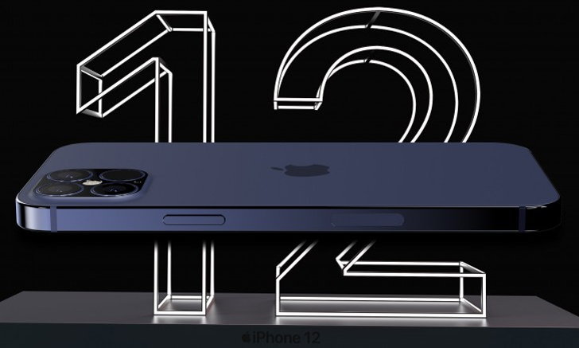
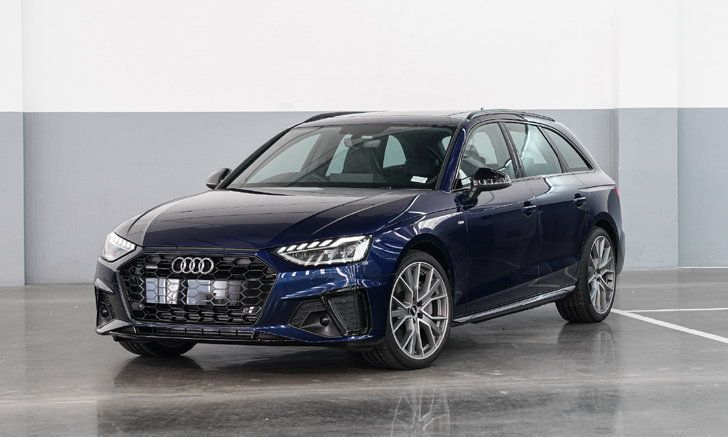
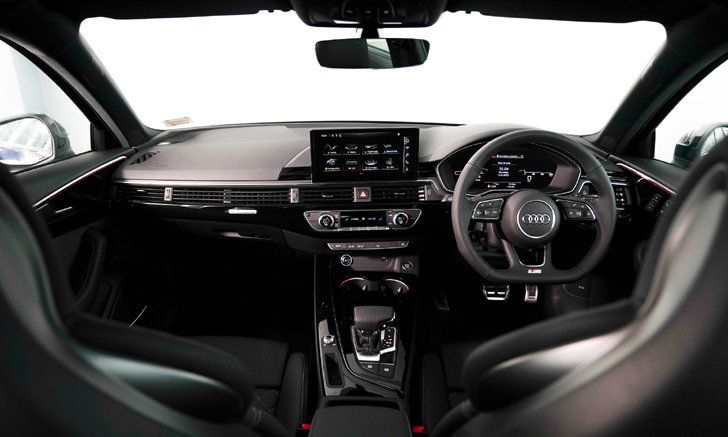
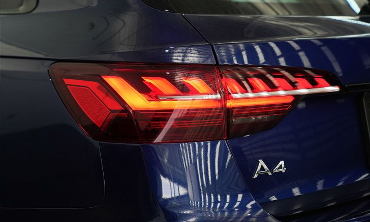

แหล่งข่าววงในชี้ : iPhone 12 Pro Max จะเป็นรุ่นเดียวที่รองรับ 5G คลื่น mmWave ความเร็วสูงสุด
ก่อนหน้านี้มีรายงานว่า Apple เตรียมเปิดตัว iPhone 12 หลายรุ่น โดยรุ่น 12 Pro และ 12 Pro Max ที่จะรองรับเครือข่าย 5G
ล่าสุดเว็บไซต์ Fast Company ได้รายงานข้อมูลจากแหล่งข่าวในอุตสหกรรมอุปกรณ์ไร้สาย ระบุว่าiPhone 12 Pro Max จะเป็นรุ่นเดียวในซีรีส์ iPhone 12 ที่รองรับการเชื่อมต่อเครือข่าย 5G คลื่นความถี่mmWave (Millimeter Wave) ที่มีความเร็วสูงสุด และสามารถเชื่อมต่อสัญญาณความถี่ได้ไม่น้อยกว่า 24 GHz (ประมาณ 26 – 28 GHz)
รายงานดังกล่าวระบุว่า iPhone 12 Pro Max เป็นเรียงรุ่นเดียวที่มีพื้นที่ภายในตัวเครื่องเพียงพอสำหรับติดตั้งเสารับสัญญาณแบบพิเศษ และกินพลังงานมากกว่าเสารับสัญญาณปกติ ซึ่งส่งผลทำให้ iPhone 12 รุ่นเล็ก มีแบตเตอรีไม่เพียงพอต่อการใช้งาน
อย่างไรก็ดี มีรายงานว่า iPhone 12 ทุกรุ่น จะรองรับ 5G คลื่นความถี่ sub-6 ที่รองรับความถี่ต่ำกว่า 6 GHz โดยทาง Apple ได้พัฒนา iPhone 12 ล่าช้าไป 2 เดือน ซึ่งทำให้มีความเป็นไปได้ว่า Apple อาจเลื่อนเปิดตัว iPhone 12 ไปเป็นเดือนตุลาคม 2020
ปรับโฉมเพิ่มออปชั่นเพียบ! Audi A4 Avant Black Edition 2020 รุ่นไมเนอร์เชนจ์

เรียกเสียงฮือฮาอีกครั้งกับ Audi บริษัทผลิตยานยนต์หรูของประเทศเยอรมนี ที่ทำการเปิดตัว A4 Avant Black Edition รุ่นไมเนอร์เชนจ์ ที่ได้รับการปรับโฉมให้ดูมีความสปอร์ตมากขึ้น นอกจากนี้ยังมีการเพิ่มออปชั่นต่างๆ มากมาย
รูปลักษณ์ภายนอกของ Audi A4 Avant 45 TFSI quattro S line Black Edition ต้องบอกว่ามีความสปอร์ตมากขึ้น กระจังหน้าหกเหลี่ยมลายรังผึ้งออกแบบใหม่ให้มีขนาดโดดเด่นกว่าเดิม กันชนหน้าตกแต่งด้วยกรอบสีดำ ไฟหน้าแบบ LED ด้านหลังมีเส้นแนวโครเมียมตกแต่งบริเวณไฟท้าย ปลายท่อไอเสียรูปสี่เหลี่ยมคางหมู ล้ออัลลอยใหม่ขอบ 19 นิ้ว
ภายในห้องโดยสารอัพเกรดดีไซน์ และวัสดุพรีเมียมขึ้น หน้าจอแบบสัมผัสขนาด 8.8 นิ้ว เชื่อมต่อกับโทรศัพท์มือถือด้วย Audi smartphone interface แสดงผลผ่านระบบ MMI Radio plus ผู้ขับขี่สามารถเลือกให้แสดงมุมมอง 3 รูปแบบ ชุดเครื่องเสียง Bang & Olufsen พร้อมระบบเสียง 3 มิติให้เสียงคมชัดสมจริง เบาะนั่งปรับไฟฟ้าแบบ S Sports วัสดุหุ้มหนัง Fine Nappa ตกแต่งแบบ Diamond Cut ออกแบบให้รองรับกับสรีระ
ในส่วนของขุมกำลังจะเป็นเครื่องยนต์เบนซิน Mild-hybrid ความจุ 2.0 ลิตร TFSI ให้กำลังสูงสุด 249 แรงม้า แรงบิดสูงสุด 370 นิวตันเมตร สามารถเร่งความเร็วจาก 0-100 กิโลเมตร/ชั่วโมง ได้ในเวลา 6 วินาที มา พร้อมฟังก์ชั่น Start/Stop ระบบขับเคลื่อนสี่ล้อ quattro with ultra-technology เกียร์อัตโนมัติ S tronic 7 สปีด และทำความเร็วสูงสุดอยู่ที่ 250 กม./ชม.
สำหรับ Audi A4 Avant 45 TFSI quattro S line Black Edition รุ่นไมเนอร์เชนจ์ เปิดตัวที่ราคา 3.399 ล้านบาท มีให้เลือกทั้งหมด 5 สี Glacier white, Mythos black, Quantum grey, Tango red และสีใหม่ Navarra blue สนใจสามารถมาชมคันจริง พร้อมส่งมอบให้ลูกค้าทันทีที่โชว์รูม อาวดี้ ทั่วประเทศ
เผยราคาครั้งแรก! Honda Civic Type R 2021 Limited Edition พร้อมขายเมืองมะกัน
ถือว่าสั่นสะเทือนวงการตลาดรถยนต์ทีเดียวสำหรับ Civic Type R Limited Edition รถยนต์รุ่นพิเศษจาก Honda บริษัทผลิตยานยนต์ของญี่ปุ่น ที่ถูกจองหมดในทุกประเทศที่วางขายด้วยเวลาอันรวดเร็ว
ล่าสุดกำลังจะเปิดจำหน่ายอย่างเป็นทางการที่สหรัฐอเมริกา โดยอย่างที่รู้กันดีว่ารถรุ่นพิเศษคันนี้จะมีจำนวนจำกัดเพียงแค่ 600 คันทั่วโลกตามสัดสวนที่ไม่เท่ากัน ซึ่งกับหลายประเทศที่ผ่านมาที่มีการเปิดตัว มันถูกจองหมดเกลี้ยงในเวลาอันรวดเร็ว
อย่างไรก็ตามที่ผ่านมาไม่เคยมีการประกาศราคาของเจ้ารถคันนี้ออกมาให้รู้กัน แต่ล่าสุด ค่ายดังจากญี่ปุ่นได้เผยราคาของเจ้ารถคันนี้ออกมาเป็นที่เรียบร้อย โดยจะมีราคาอยู่ที่ 43,995 เหรียญสหรัฐฯ (ประมาณ 1,380,000 บาท) ถือว่าแพงกว่ารุ่นธรรมดาอยู่ 6,500 เหรียญสหรัฐฯ (ประมาณ 200,000 บาท)
รูปลักษณ์ของ Honda Civic Type R Limited Edition จะแตกต่างจากที่เคยมีมาด้วยกระจังหน้าที่กว้างขึ้น ติดตั้งด้วยตะแกรงอลูมิเนียมที่ฝากระโปรงหน้า เพื่อช่วยระบายอากาศได้อย่างมีประสิทธิภาพ ล้ออัลลอย BBS ขนาด 20 นิ้ว ที่มีน้ำหนักเบากว่าล้อทั่วไป และจุดสำคัญคือตัวถังจะเป็นสีเหลืองพิเศษ (Phoenix Yellow)
ในส่วนของตัวเครื่องยนต์ Honda Civic Type R Limited Edition จะขับเคลื่อนด้วยเครื่องยนต์เบนซิน 2.0 ลิตร Turbo 4 สูบเรียง ผลิตกำลังได้ 306 แรงม้า แรงบิดสูงสุด 400 นิวตันเมตร ขับเคลื่อนล้อหน้าด้วยเกียร์ธรรมดา 6 สปีด และเฟืองท้ายแบบพิเศษ (Limited-slip differential)
สำหรับ Honda Civic Type R Limited Edition ถือว่ากระแสดีมากๆ ทั้งในทวีปยุโรป และทวีปอเมริกา เมื่อต้นปีที่ผ่านมา ได้ทำการเปิดตัวในสหราชอาณาจักร 20 คัน ก็ขายหมดเกลี้ยงในทันที ขณะที่ในแคนาดาแม้จะมียอดขายสูงถึง 100 คัน แต่ก็หมดในเวลาเพียง 4 นาที ซึ่งลูกค้าทุกคนจะต้องวางเงินมัดจำ 1,000 เหรียญสหรัฐฯ (ประมาณ 31,500 บาท)